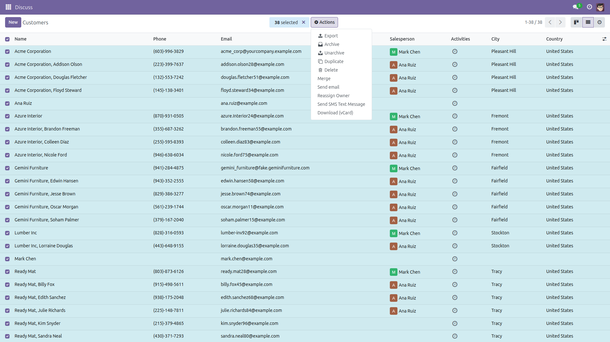
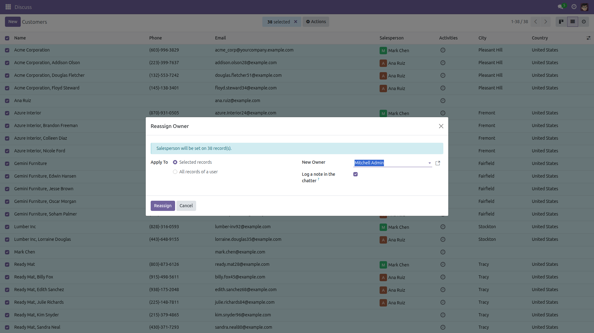
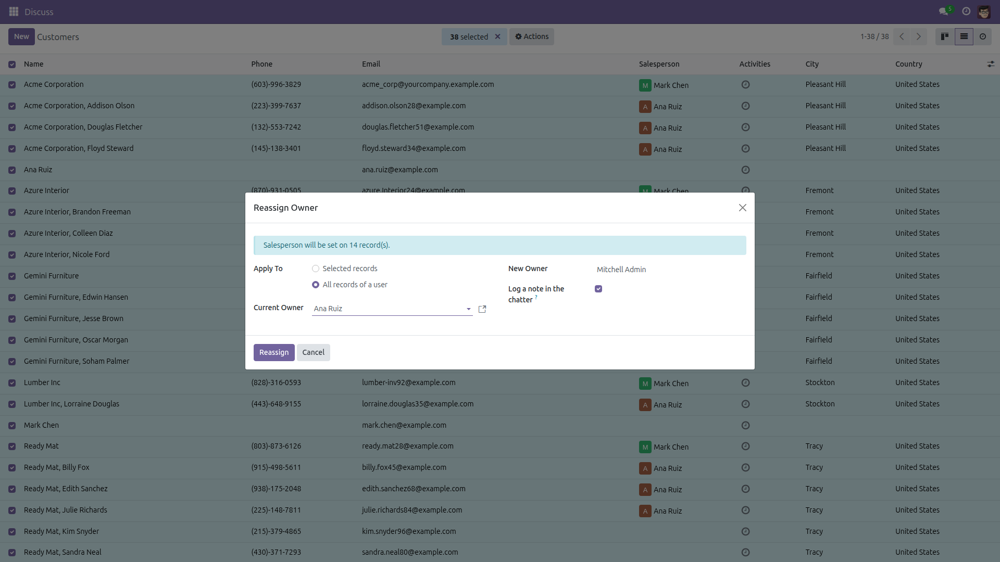

Reassign Records in Bulk
Someone leaves. Their records move in one click.
When a salesperson or a project member leaves, every record they own has to be reassigned by hand, one form at a time. This module adds a Reassign Owner action: select the records — or simply pick all records of user X — choose the new owner, and apply.
Free and open source (LGPL-3), Odoo 14.0 through 19.0.
- Works on any model — the responsible field is detected automatically (
user_id, user_ids or activity_user_id, whichever the model stores and lets you edit); a model without one gives a clear message instead of an obscure error.
- Two ways to select — the records you ticked, or every record still owned by the person who is leaving, archived records included, with a live counter.
- Respects access rights — the reassignment runs as you, never with elevated privileges; records you may not write are reported as skipped, not silently ignored.
- Never aborts halfway — every record is written in its own savepoint, so one failure does not roll back the rest.
- Capped at 10000 records per run — a bigger job processes the first 10000 inside the worker time limit, reports exactly how many records are left, and a repeat run continues where it stopped.
- Traceable — a note is logged in the chatter of each record that changed, and a summary reports reassigned / already assigned / skipped / failed.
Screenshots

Tick the records, then choose Actions → Reassign Owner.

The wizard names the responsible field it detected and how many records it will touch. Pick the new owner and apply.

Switch to "All records of a user" to hand over everything a leaver still owns, without selecting anything by hand.
Installation
- Open Apps, search for Reassign Records in Bulk and click Install.
- Only the standard
mail module is required.
Configuration
- None. The action is available immediately on Contacts.
- To offer it on other models, a technical user opens Settings → Technical → Actions → Window Actions, edits Reassign Owner and adds the model to the action bindings.
Usage
- Open a list view and tick the records to hand over.
- Choose Actions → Reassign Owner in the toolbar.
- Keep Selected records, or switch to All records of a user and pick the person who is leaving.
- Choose the new owner, leave Log a note in the chatter ticked, and click Reassign.
- Read the summary: reassigned, already assigned, skipped (no write access) and failed records are counted separately.
Version notes
Identical behavior on every supported series (14.0 – 19.0). On a many2many responsible field the new owner is added and the previous owner removed, so the remaining collaborators are kept.
At most 10000 records are reassigned per run. When more records match, the wizard warns before you apply and the summary says how many records are left — run the action again until nothing remains.
License: LGPL-3 · Issues and contributions welcome.